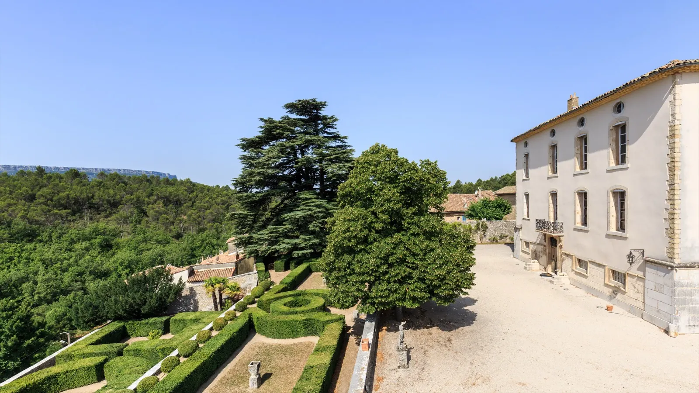
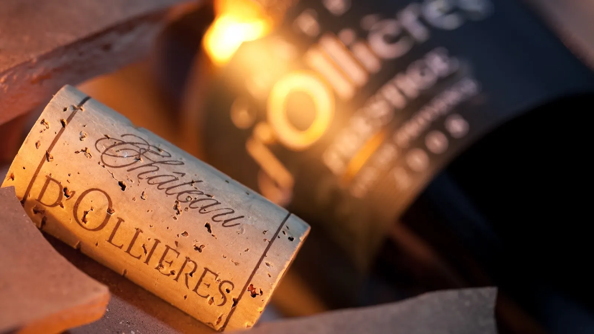
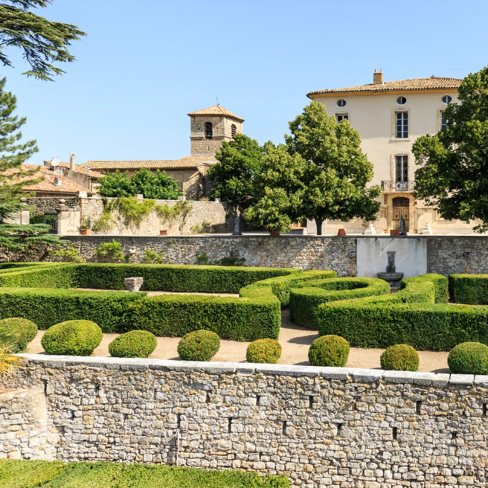
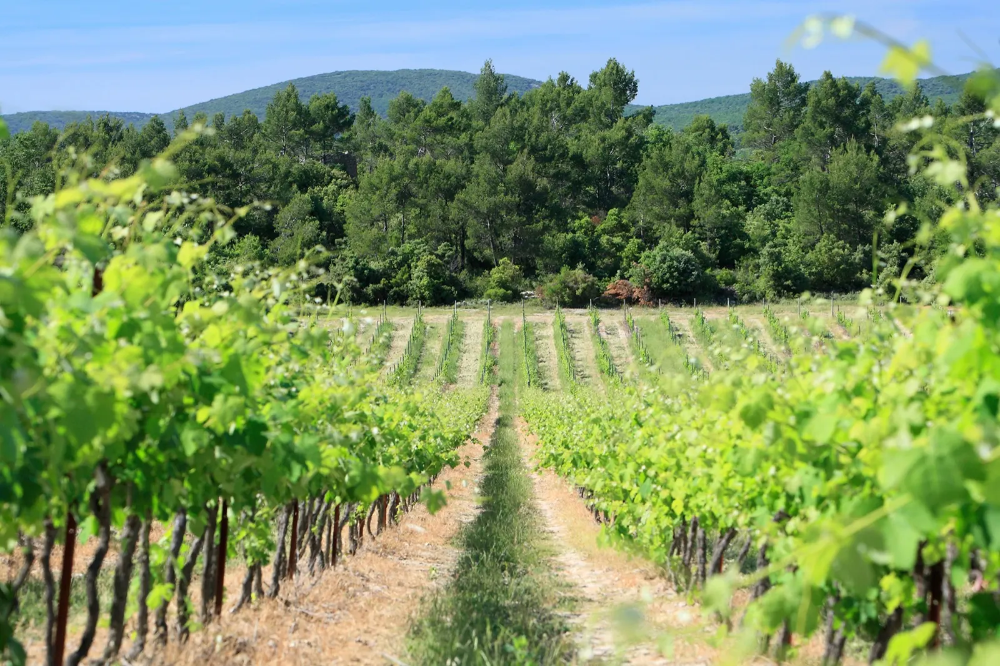
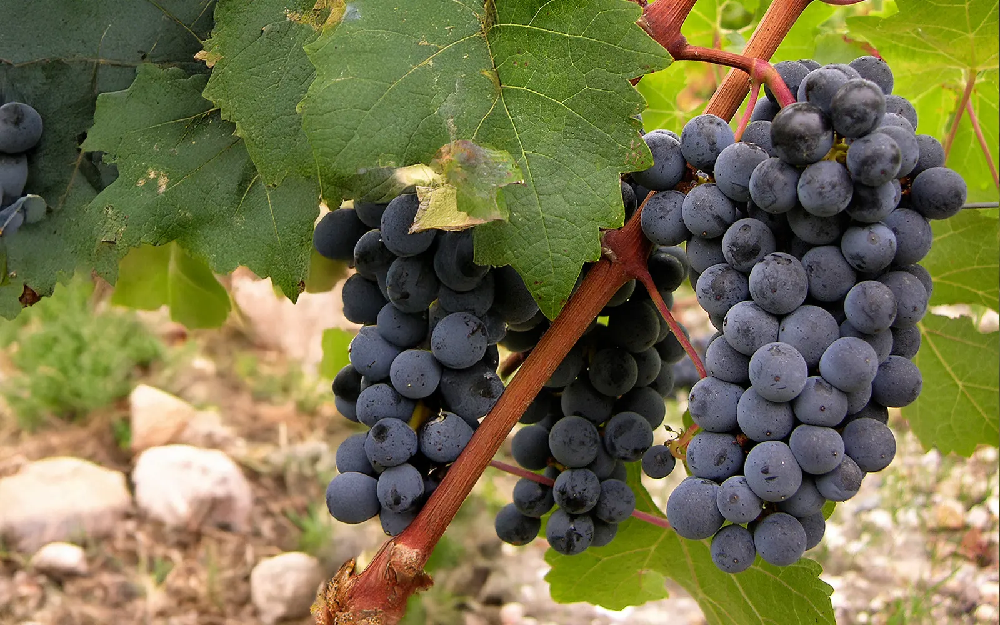
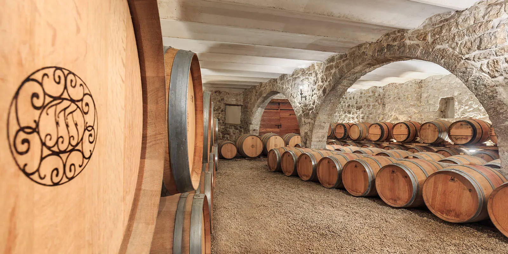
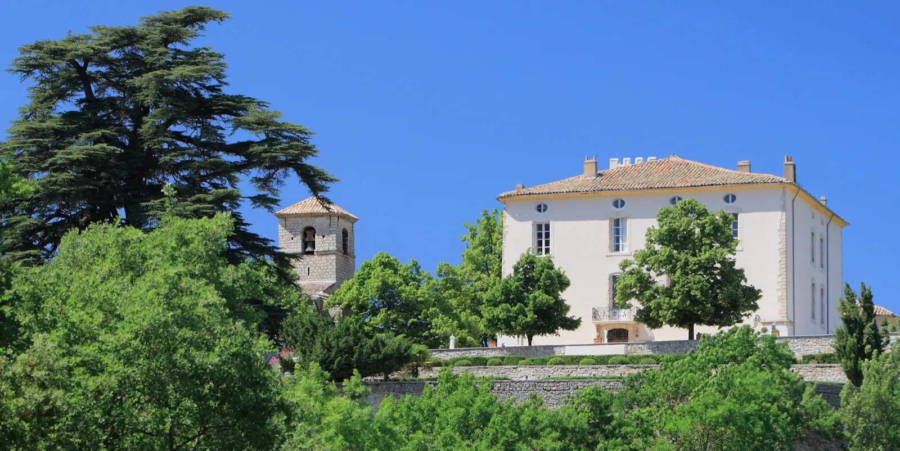

AOC Coteaux Varois en Provence
La passion du vin en Provence
Un domaine hors des sentiers battus, perché au-dessus du village d'Ollières, entre Aix-en-Provence et Saint-Maximin. Une ancienne seigneurie à l'histoire millénaire, ravivée par la famille Rouy.
- Xe siècleUn premier château garde la route de Brignoles à Aix
- 2003La famille Rouy reprend et restaure le domaine
- 200 médaillesPlus de 200 récompenses en 20 ans
- Trois gammesClassiques, Prestiges et les Hauts, en rouge, blanc et rosé
Haut, Prestige ou Classique
Les vendanges sont faites, le terroir s'est exprimé : il faut porter cette belle parole sans jamais la trahir. En rouge, en blanc ou en rosé, chaque cuvée garde sa typicité, pour des accords mets et vins justes et subtils.
Les Classiques
Prix TTC, le carton
- Classique Rosé64,20 €
- Classique Blanc65,40 €
- Classique Rouge68,40 €
Les Prestiges
Prix TTC, le carton
- Prestige Rosé93,60 €
- Prestige Blanc101,40 €
- Prestige Rouge106,80 €
Les Hauts
Prix TTC, le carton
- Haut de l'Autin115,80 €
- Haut du Pigeonnier132,00 €
- Haut du Prieuré 2016162,60 €
L'effervescent
Notre vin effervescent
- Hubert d'Ollières
Renseignements au 04 94 59 85 57 ou à info@chateau-ollieres.com.

Expédition par carton entier, à une seule adresse en France métropolitaine, sous 10 jours à réception du paiement.

Ce n'est pas là qu'un nom avenant sur une étiquette. C'est aussi et surtout une longue et belle histoire.
- Xe siècle
Un premier château est érigé sous les Carolingiens pour protéger la route de Brignoles à Aix-en-Provence.
- Fin XVIIe
Les Félix, grande famille de la noblesse provençale, construisent le château d'aujourd'hui.
- XVIIIe
Le jardin lapidaire, beau mariage entre sculptures et verdure, toujours joliment entretenu.
- 2003
La famille Rouy reprend le domaine et lance la restauration de ce lieu chargé d'histoire.
Une balade dans le jardin, une dégustation au caveau et un tour dans les vignes : une visite au Château d'Ollières est un vrai moment d'émotion.
Une mélodie à quatre mains
Pour produire de grands vins en Provence, comme elle en a fait le vœu dès son arrivée, la famille Rouy a consenti beaucoup d'efforts et d'investissements. Le domaine s'installe désormais durablement parmi les belles références du terroir provençal.
Charles Rouy
Formé à Beaune, dans sa Bourgogne natale, titulaire d'un BTS viticulture-œnologie, il a fait ses premières armes deux ans durant chez Bouchard Père & Fils.
Bruno Rouy
Formé dans la région de Mâcon, après plusieurs expériences internationales, il a dirigé pendant plus de 15 ans un domaine classé Cru Bourgeois dans le Médoc avant de rejoindre l'aventure familiale à Ollières.



200médailles et plus en 20 ans. La plus belle des récompenses reste, à nos yeux, la fidélité de notre clientèle.
« Cette cuvée est le rosé le plus ambitieux produit dans la vaste appellation des Coteaux Varois. »
Un encouragement à poursuivre le travail entamé en 2003 pour hisser le domaine parmi les grandes références du vignoble provençal.

Nous rendre visite
Quittez l'ex-Nationale 7 entre Aix-en-Provence et Saint-Maximin, flânez quelques kilomètres dans la campagne : un dernier tournant et le voilà.
- De septembre à juinDu lundi au vendredi, 9 h à 12 h 30 et 14 h à 17 h 30
- Juillet et aoûtDu lundi au samedi, 9 h à 12 h 30 et 14 h à 17 h 30En dehors de ces horaires, appelez-nous pour prendre rendez-vous.
- Le Château, 83470 Ollières
- 04 94 59 85 57
- info@chateau-ollieres.com